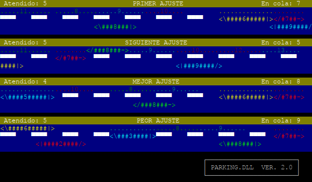

Enunciado.
Esta funcionamiento de esta práctica es muy similar a la anterior,
con algunas diferencias que se explican en este documento, entre las
que destacan:
- Se usarán llamadas de la API de WIN32
- Habrá un único proceso, eso sí, con varios hilos
- Se proporciona una biblioteca de enlazado dinámico, DLL, en lugar
de una de enlazado estático
- Desaparecen los chóferes: para aparcar o desaparcar coches se
creará un hilo nuevo
- Tampoco es necesario programar prioridades: FIFO, aparcar o desaparcar
- No se requiere de ningún proceso extra que duerma para avisar
del fin de la simulación
- Aparecen cuatro manejadoras más, además de las de llegadas,
para gestionar las salidas de cada algoritmo
- No hay buzón de paso de mensajes para comunicar aparcamientos
y salidas
El programa propuesto constará de un único fichero fuente,
parking2.cpp, cuya adecuada compilación producirá
el ejecutable parking2.exe. Se trata de simular mediante
un programa que realice llamadas a la API de WIN32
la gestión de memoria de un sistema operativo que use
particiones de tamaño dinámico. Para ello, se establece el
símil con el problema de elegir el mejor aparcamiento para un coche
de todos los posibles en una acera. Según se va ejecutando el programa,
se ha de ver una imagen parecida a la siguiente:

Los algoritmos, características de acera, calzada y coches son iguales
a los correspondientes de la práctica anterior. En particular, también
se requiere que los coches aparquen en orden numérico consecutivo en
cada algoritmo.
Parking2 acepta un máximo de dos argumentos por
la línea de órdenes. Si no se introducen argumentos, se imprimirá
un mensaje con la forma de uso del programa por el canal de
error estándar. En el caso de teclear un argumento, dicho argumento
será un número entero mayor o igual que cero
relacionado con la rapidez con que se producen los acontecimientos
en el programa. Cero indica la máxima rapidez y números
mayores suponen una rapidez progresivamente menor. Finalmente,
si son dos los parámetros introducidos, el primero es idéntico
al caso anterior y el segundo será una "D", indicando que se
desea que el programa produzca información de depuración por
el canal de errores estándar.
Para facilitar la tarea, tenéis a vuestra disposición
una biblioteca de funciones de enlazado dinámico
parking2.dll y un fichero de cabeceras,
parking2.h.
Gracias a la biblioteca, muchas de las funciones no las tendréis
que programar sino que invocarlas a la DLL, tal como se
explica en la sesión novena.
La biblioteca creará un hilo adicional a los vuestros por
cada algoritmo para su funcionamiento interno, de los cuales no
tendréis que ocuparos. Una descripción
detallada de las funciones de la biblioteca aparece más abajo
en esta misma página.
El programa, desde vuestro punto de vista, se simplifica
bastante. Se ha de llamar a la función PARKING2_inicio
de la DLL. El hilo dormirá 30 segundos e invocará a la función
PARKING2_fin, para acabar con la simulación.
Se deben programar cuatro funciones, una por algoritmo, que serán
llamadas por la DLL cada vez que un coche llegue y cuatro funciones
a las que la DLL llamará cuando un coche tenga que marcharse. Dichas
funciones de rellamada son registradas en la función
PARKING2_inicio de la DLL.
Los prototipos de los dos tipos de funciones de rellamada,
se describen aquí:
int funciOn_llegada(HCoche hc);
La DLL llamará a una de estas funciones cuando llegue un nuevo
coche. La respuesta que debe devolver vuestro código
indicará qué se debe hacer con ese coche. -1 indica
que no hay sitio para él y debe encolarse. Un valor entre
0 y 79 significa la posición a partir de la cual se debe
aparcar el coche. Además, si devolvemos -2, indicaremos
a la biblioteca que no queremos procesar más coches de
ese algoritmo, lo que puede ser útil para anular uno o
varios algoritmos para depurar los demás.
Esta función también deberá crear un
nuevo hilo de ejecución para que aparque el coche con
ayuda de la función PARKING2_aparcar de la DLL.
La función, sin embargo, no debe esperar a que el hilo
recién creado acabe de aparcar el coche.int funciOn_salida(Hcoche hc);
La función es llamada cuando ha expirado el tiempo de
aparcamiento de un coche. Al igual que ocurría con
la función anterior, se debe crear un nuevo hilo de ejecución
que saque al coche del aparcamiento, invocando a la función
PARKING2_desaparacar de la DLL. Tampoco esperará esta
función a que el hilo acabe. Debe devolver 0 en caso normal
y -1 en caso de error.
La funciones PARKING2_aparcar y PARKING2_desaparcar son
especiales puesto que gestionan el movimiento de los coches automáticamente
mediante funciones de rellamada a vuestro código. Estos son sus prototipos
con la correspondiente explicación:
int PARKING2_aparcar(HCoche,void *datos,
TIPO_FUNCION_APARCAR_COMMIT,
TIPO_FUNCION_PERMISO_AVANCE,
TIPO_FUNCION_PERMISO_AVANCE_COMMIT);
La DLL puede llamar a la función de llegada en cualquier
orden y es responsabilidad del programador que los coches se
aparquen en orden numérico. Para ello, se debe invocar
la función PARKING2_aparcar del hilo que
toque y no invocar a la función del hilo del coche
siguiente hasta haber recibido la rellamada de aparcar
commit. Esta rellamada indica que la biblioteca ha tomado
nota de la anterior llamada y ya se puede invocar al siguiente.
El avance del coche también se regula mediante dos funciones
de rellamada que se especifican en esta función. Cada vez
que un coche quiere avanzar, la DLL invoca a nuestra función
de permiso avance. Debemos bloquearnos, sin consumir CPU,
hasta que el avance sea seguro. En esos momentos, la DLL produce
el avance en el coche y nos avisa a través de la
función permiso avance commit.int PARKING2_desaparcar(HCoche,void *datos,
TIPO_FUNCION_PERMISO_AVANCE,
TIPO_FUNCION_PERMISO_AVANCE_COMMIT);
La descripción de esta función es equivalente
a la de la función anterior, con la salvedad de que,
al no importar el orden en que se desaparca, no es necesaria
una función de confirmación (commit) en
este caso.
Características adicionales que programar
- El programa no debe consumir CPU apreciablemente
en los modos de retardo mayor o igual que 1.
para comprobar el consumo de CPU, podéis arrancar
el administrador de tareas de Windows, mediante
la pulsación de las teclas CTRL+ALT+SUPR.
Observad, no obstante, que en las aulas de informática
puede que esta opción esté deshabilitada.
- IMPORTANTE: Aunque no se indique
explícitamente en el enunciado, parece obvio que
se necesitarán objetos de sincronización en diferentes
partes del programa.
Biblioteca parking.dll
Con estra práctica se trata de que aprendáis a sincronizar y
comunicar hilos en Windows. Su objetivo no es la programación.
Es por ello que se os suministra una biblioteca dinámica de
funciones ya programadas para tratar de que no tengáis que
preocuparos por la presentación por pantalla, la gestión de
estructuras de datos (colas, pilas, ...) , etc. También servirá
para que se detecten de un modo automático errores que se
produzcan en vuestro código. Para que vuestro programa funcione,
necesitáis la biblioteca parking.dll
y el fichero de cabeceras parking2.h.
Ficheros necesarios:
Las funciones que la biblioteca exporta para que las uséis son:
int PARKING2_inicio(TIPO_FUNCION_LLEGADA f_llegadas[],
TIPO_FUNCION_SALIDA f_salidas[],LONG intervalo, BOOL d)
El hilo principal debe llamar a esta función cuando desee
que la simulación comience. La función devuelve -1
si se ha producido un error. Los argumentos son:
f_llegadas: es un array de cuatro
elementos. Contiene los punteros a las funciones
de vuestro programa que queréis que la DLL invoque
cada vez que llega un coche nuevo para cada
algoritmo. El prototipo de
las funciones se ha especificado más arriba.f_salidas: Lo mismo que el parámetro
anterior, pero para las funciones que son invocadas
cada vez que ha concluido el tiempo que debe permanecer
un coche aparcado y tiene que salir.intervalo: lentitud de ejecución. Es el valor
que se ha pasado como primer argumento al programa.d: flag que indica si se desea
que la biblioteca produzca información de
depuración por el canal de errores estándar.
void PARKING2_aparcar(HCoche hc,void *datos,
void (*fCommit)(HCoche),
void (*fPermisoAvance)(HCoche),
void (*fPermisoAvanceCommit)(HCoche))
Se invoca esta función cuando queremos que aparezca por
la pantalla la animación de un coche aparcando y siempre
respetando el orden numérico de los coches:
hc: manejador del coche que queremos aparcar.datos: puntero de datos que podemos asociar al
coche para recuperarlos en cualquier otro momento.fCommit: manejadora que será invocada cuando
la DLL haya anotado la salida del coche.fPermisoAvance: manejadora que es llamada por la
DLL antes de efectuar un movimiento del coche para aparcar.
A través del manejador del coche que se nos pasa, podremos
obtener su información. En particular, su posición
(funciones PARING2_getX() y PARKING2_getY()),
la posición a la que desea ir
(funciones PARING2_getX2() y PARKING2_getY2()),
el puntero a los datos que hemos asociado al coche
(función PARKING2_getDatos()), etc.
La función se debe bloquear sin consumo de CPU hasta que
sea seguro para el coche el avance.fPermisoAvanceCommit: esta manejadora será
invocada por la DLL cuando ha hecho efectivo el avance del coche.
En este caso, las coordenadas (x,y) se corresponden
con la posición ya avanzada del coche y (x2,y2)
son las coordenadas de la posición antes de avanzar.
void PARKING2_desaparcar(HCoche hc,void *datos,
void (*fPermisoAvance)(HCoche),
void (*fPermisoAvanceCommit)(HCoche))
Idéntica a la función anterior, sólo que para que se muestre
la salida de un coche. En este caso no aparece la función commit
pues se hace innecesaria, al no ser un requisito que desaparquen en un
determinado orden.int PARKING2_getNUmero(HCoche hc)
int PARKING2_getLongitud(HCoche hc)
int PARKING2_getPosiciOnEnAcera(HCoche hc)
int PARKING2_getColor(HCoche hc)
int PARKING2_getX(HCoche hc)
int PARKING2_getY(HCoche hc)
int PARKING2_getX2(HCoche hc)
int PARKING2_getY2(HCoche hc)
int PARKING2_getAlgoritmo(HCoche hc)
unsigned long PARKING2_getTServ(HCoche hc)
void *PARKING2_getDatos(HCoche hc)
Todas estas funciones dan información relativa al coche cuyo
manejador se pasa como parámetro. Dicha información es,
respectivamente:
- número del coche
- longitud del coche
- posición x en la acera donde ese coche va a
aparcar o -1 si todavía no está decidido
- color del coche
- coordenada x de la posición del coche donde se encuentra
- lo mismo para la coordenada y
- coordenada x de la posición a la que quiere avanzar el
coche (función de permiso de avance) o de la que viene
(función de confirmación de permiso de avance)
- idem coordenada y
- algoritmo al que pertenece el coche (
PRIMER_AJUSTE,
SIGUIENTE_AJUSTE, MEJOR_AJUSTE y
PEOR_AJUSTE, según vienen definidas en el
fichero de cabeceras)
- tiempo de servicio en unidades de tiempo de la simulación
- puntero de datos que se le ha asignado al coche en la función de
aparcar
int PARKING2_isAceraOcupada(int algoritmo,int pos)
Devuelve verdadero si la posición (0-79) de la acera (0-3)
indicadas en sus argumentos está ocupada por un coche, desde
el punto de vista de la biblioteca. Solamente debe usarse como
depuración. El estado de las aceras en cada momento lo
debe gestionar vuestra aplicación con sus propias variables.int PARKING2_fin(void)
Se debe llamar a esta función cuando se desee terminar la
simulación. Devolverá -1, si la simulación
acabó por un error.
Sincronización interna de la DLL
La sincronización interna de la DLL está basada en un
mutex por cada algoritmo.
El esquema de sincronización interna es el siguiente:
Mutex Mu[nAlgoritmos];
Mu[x]=1;
[...]
SimulaciOn: (un hilo por cada algoritmo)
===========
mientras no haya que acabar
Calcular el tiempo de la prOxima salida o llegada
Dormir hasta ese tiempo o si nos avisan de coches reciEn aparcados/desaparcados
Wait(Mu[algoritmo]);
if (hay coches reciEn aparcados)
calcular su tiempo de salida
pasarlos a la lista de aparcados
if (hay coches reciEn desaparcados)
borrar los coches del sistema
Signal(Mu[algoritmo]);
mientras el tiempo de la prOxima llegada sea menor que el reloj
if (lista de espera no estA llena (500 coches))
crear nuevo coche y meterlo en la lista de espera
calcular el tiempo de la prOxima llegada
mientras haya coches en la lista de espera
hc=tomar primer coche de la lista
Wait(Mu[algoritmo])
posBuena=Calcular la posiciOn buena
vuestraPos=Pedir la posiciOn a vuestra funciOn
poner en hc la posiciOn buena
if (vuestraPos==-2)
hacer que prOxima llegada sea infinito
vaciar la lista de espera
Signal(Mu[algoritmo])
break
if (posBuena!=vuestraPos)
poner el error
Signal(Mu[algoritmo])
break
if (vuestraPos==-1)
Signal(Mu[algoritmo])
break
Sacar el coche de la lista de espera
Reservar la acera
Signal(Mu[algoritmo])
Aparcar: (la realiza un hilo independiente)
========
si no le toca a este coche, poner el error
incrementar el nUmero que toca
almacenar el puntero de los datos de usuario pasado en el coche
desde la pos=79 hasta la posición en que el coche tiene que aparcarse
pausa de avance
llamar a permiso de avance
dibujar el coche
llamar a permiso de avance commit
si pos=79, llamar a aparcar commit
hacer lo mismo para los dos avances verticales para acabar de aparcar
Wait(Mu[algoritmo])
encolar el coche en los recién aparcados
avisar al hilo de la simulaciOn
Signal(Mu[algoritmo])
Desaparcar: (la realiza un hilo independiente)
===========
permiso avance, dibujo y llamar a avance commit para el primer avance vertical
permiso avance para el segundo avance vertical
Wait(Mu[algoritmo])
dibujar el coche
liberar la reserva de la acera
llamar a permiso avance commit
Signal(Mu[algoritmo])
hasta que el coche desaparece: pausa, permiso avance, dibujo, llamar a avance commit
Wait(Mu[algoritmo])
meter el coche en la lista de recién desaparcados
avisar al hilo de la simulaciOn
Signal(Mu[algoritmo])